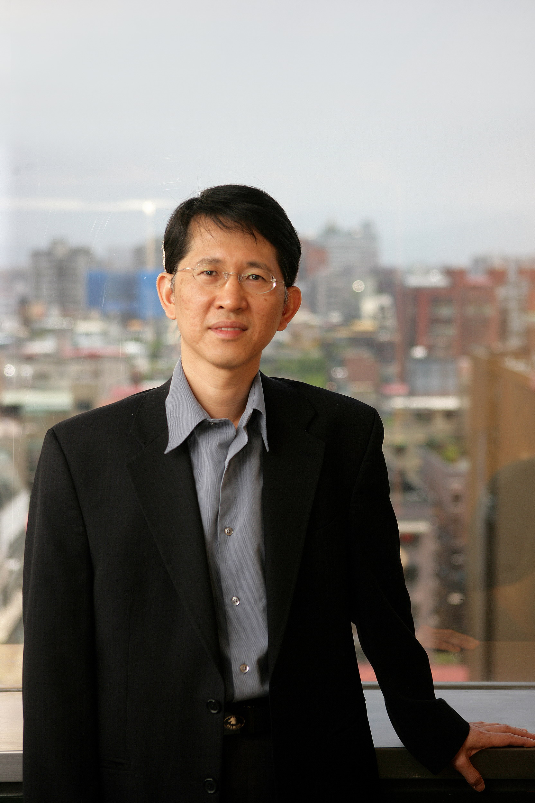

Panel Discussion 1: Open Dependability Issues in Cloud and Big Data Systems
Computer systems (e.g., digital sensors, networks, and smart devices) are now available anytime, anywhere, by different means, and are distributed unobtrusively throughout everyday environments in which physical objects/artifacts embedded with invisible computers are sensible and networked locally and globally. The rapid development of the computer systems with their extensive use is leading to the creation of huge collections of data, and coins the term Big Data. Big Data is characterized by the integration of a significant amount of data, of varying modalities or types, at a pace that cannot be handled by traditional data management systems. Since huge amounts of data in unstructured and semi-structured forms are being generated from various sources, new systems, frameworks and methodologies are being designed and developed for data management and data analytics. Although tremendous efforts are being given to these big systems, there is no doubt that they must be “dependable.”
In the last few years, cloud computing has grown from being a promising business concept to one of the fastest growing segments of the IT industry. Cloud computing enables computing systems/resources to be provided as IT services in a pay-as-you-go fashion. The services can be achieved with high efficiency and effectiveness only if the systems are ‘dependable.’ Among various circumstances, dependability can be affected by the open environment with very limited user-side control in Cloud. As a result, “dependability” is going to be one of most concerned issues for Cloud computing. It is also a great challenge for Big Data together with Cloud. Future systems need to close the dependability gap in face of challenges in different circumstances. The emphasis will be on differing properties of such services, e.g., continuity, effective performance, real-time responsiveness, ability to overcome data fault/corruption/anomaly, ability to avoid failures, prevention of deliberate privacy intrusions, reliability/availability/adaptability/security/safety, and so on. While information society, commercial and scientific companies, and industries share the need for massive throughput, “dependability” of service becomes a big concern.
The aim of this panel discussion is to discuss various aspects and open ideas, explore key open issues, and investigate technology enablers to motivate future research of dependability in Big Data and Cloud computing.
Panel Co-chairs:
Guojun Wang (Central South University, Changsha, China)
Tatsuhiro Tsuchiya (Osaka University, Japan)
Md Zakirul Alam Bhuiyan (Temple University, USA)
Panellists:
Prof. Takashi Nanya, University of Tokyo, Japan
Prof. Jemal Abawajy, Deakin University, Australia
Prof. Weijia Jia, Shanghai Jiao Tong University, China
Prof. Yennun Huang, Academia Sinica, Taiwan
Prof. Jinjun Chen, University of Technology, Sydney, Australia
Panel 1 Speaker 1: Prof. Takashi Nanya, University of Tokyo, Japan
Title: Economics of Dependability: an open issue in the information society
Abstract: There are many known and unknown factors that pose a threat to dependability in big-data and cloud-based systems on which our daily lives depend.Everybody knows that we need dependability in this information society.Many dependability efforts have been proposed and implemented.But, a frequently asked question is how much we should pay for the dependability.In this panel talk, we submit a research proposal on the economics of dependability as an open issue for engineering a dependable information society.
Takashi Nanya is an Emeritus Professor of both the University of Tokyo and the Tokyo Institute of Technology.He is a Fellow of the IEEE and the IEICE, and a Member of the Science Council of Japan (SCJ). In the past, he served as Chair of the IEEE TC on Dependable Computing and Fault Tolerance, the Steering Committee Chair for the International Conference on Dependable Systems and Networks (DSN) and the Pacific-Rim International Conference on Dependable Computing (PRDC), and Vice-chair of IFIP WG10.4 on Dependable Computing and Fault Tolerance.He also served as Associate Editor of IEEE Transactions on Computers, Guest Editor of IEE Proceedings on Computers and Digital Techniques, and Guest Editor of IEICE Transactions on Information Systems.He served as the General Chair for ASYNC, PRDC and DSN, and as a PC Co-Chair for FTCS and ASP-DAC.He has served on numerous Technical Program Committees of IEEE and IFIP sponsored conferences. He received his B.E. and M.E. degrees in mathematical engineering and information physics from the University of Tokyo in 1969 and 1971, respectively, and his Ph.D. degree in electrical engineering from the Tokyo Institute of Technology in 1978. He was a professor of the Tokyo Institute of Technology from 1981 to 1996 and the University of Tokyo from 1996 to 2010.He served as the Director of the Research Center for Advanced Science and Technology (RCAST), and a Councilor of the University of Tokyo from 2001 to 2004.He worked for NEC from 1971 to 1981, and for CANON from 2010 to 2015. His research interests include dependable computing and system design methodology.
Panel 1 Speaker 2: Prof. Jemal Abawajy, Deakin University, Australia
Title: Knowledge-Free Resource Provisioning on Failure-Prone Hybrid Cloud Systems
Abstract: With the increased functionality and complexity of Cloud computing environments, resource failures are inevitable. This is especially so with multiple Cloud providers with various quality of service levels. The question we address in this talk is how to provision resources to workflow-based applications where resource failures in hybrid Cloud computing systems can and do arise. We also discuss our latest work that takes into account the workload models and failure correlations to schedule workflow applications to appropriate Cloud providers. Using failure traces and workload models, we evaluated the performance and monetary cost of the proposed policies.
 Dr. Jemal H. Abawajy is a full professor at School of Information Technology, Faculty of Science, Engineering and Built Environment, Deakin University, Australia. He is currently the Director of the Parallel and Distributing Computing Laboratory. He is a Senior Member of IEEE Computer Society; IEEE Technical Committee on Scalable Computing (TCSC); IEEE Technical Committee on Dependable Computing and Fault Tolerance and IEEE Communication Society. Prof. Abawajy has delivered more than 50 keynote addresses, invited seminars, and media briefings and has been actively involved in the organization of more than 300 national and international conferences in various capacity including chair, general co-chair, vice-chair, best paper award chair, publication chair, session chair and program committee. He has also served on the editorial-board of numerous international journals and currently serving as associate editor of the IEEE Transactions on Cloud Computing, International Journal of Big Data Intelligence and International Journal of Parallel, Emergent and Distributed Systems. He has also guest edited many special issues. Prof. Abawajy is actively involved in funded research supervising large number of PhD students, postdoctoral, research assistants and visiting scholar in the area of Cloud Computing, Big Data, Network and System Security, Decision Support System, and E-healthcare. He is the author/co-author of five books, more than 250 papers in conferences, book chapters and journals such as IEEE Transactions on Computers and IEEE Transactions on Fuzzy Systems. He also edited 10 conference volumes. More info at http://www.deakin.edu.au/~jemal
Dr. Jemal H. Abawajy is a full professor at School of Information Technology, Faculty of Science, Engineering and Built Environment, Deakin University, Australia. He is currently the Director of the Parallel and Distributing Computing Laboratory. He is a Senior Member of IEEE Computer Society; IEEE Technical Committee on Scalable Computing (TCSC); IEEE Technical Committee on Dependable Computing and Fault Tolerance and IEEE Communication Society. Prof. Abawajy has delivered more than 50 keynote addresses, invited seminars, and media briefings and has been actively involved in the organization of more than 300 national and international conferences in various capacity including chair, general co-chair, vice-chair, best paper award chair, publication chair, session chair and program committee. He has also served on the editorial-board of numerous international journals and currently serving as associate editor of the IEEE Transactions on Cloud Computing, International Journal of Big Data Intelligence and International Journal of Parallel, Emergent and Distributed Systems. He has also guest edited many special issues. Prof. Abawajy is actively involved in funded research supervising large number of PhD students, postdoctoral, research assistants and visiting scholar in the area of Cloud Computing, Big Data, Network and System Security, Decision Support System, and E-healthcare. He is the author/co-author of five books, more than 250 papers in conferences, book chapters and journals such as IEEE Transactions on Computers and IEEE Transactions on Fuzzy Systems. He also edited 10 conference volumes. More info at http://www.deakin.edu.au/~jemal
Panel 1 Speaker 3: Weijia Jia, Shanghai Jiao Tong University, China
Title: When Big IoT meets with the Dependability
Abstract: In this talk, I would like to share my opinion about the Big IoT (e.g. Industrial Internet of Things) and Dependability. What are the critical issues when Big IoT meets with the dependability, especially with basic attributes of Availability; Reliability, Safety, Confidentiality, Integrity and Maintainability.
Prof. Weijia Jia is currently a full-time Zhiyuan Chair Professor at Shanghai Jiaotong University. He is leading currently several large projects on next-generation Internet of Things, environmental sensing, smart cities and cybersoace sensing and associations etc. He received BSc and MSc from Center South University, China in 82 and 84 and PhD from Polytechnic Faculty of Mons, Belgium in 1993 respectively. He worked in German National Research Center for Information Science (GMD) from 93 to 95 as a research fellow. From 95 to 13, he has worked in City University of Hong Kong as a full professor. He has published over 400 papers in various IEEE Transactions and prestige international conference proceedings.
Panel 1 Speaker 4: Yennun Huang, Academia Sinica, Taiwan
Title: Challenges in Privacy Management for Big Data Systems
Abstract: In this presentation, I will describe the importance of privacy management and its technology challenges. I will then overview some privacy enhancing technology and its research opportunities.
Dr. Huang is a Distinguished Research Fellow in Academia Sinica and an IEEE Fellow (for his contributions on fault tolerance and fault prevention Techniques). Dr. Huang received BS in EE from National Taiwan University and his PhD in Computer Science from University of Maryland. He Joined AT&T Bell Labs as a researcher in 1989. Dr. Huang became a Distinguished Member of Technical Staff of Bell Labs in 1996. He started the Dependable Computing Research Department in AT&T in 1999 and was the department head of the organization to ensure the high dependability of all AT&T services. Dr. Huang became the VP of Engineering of PreCache Inc, a Sony subsidiary, in 2001 to create a multi-media content delivery service (Sony version of Apple iTune). In late 2004, Dr. Huang returned to AT&T and became the Executive Director of Dependable Distributed Computing and Communication Research Department to lead research on Digital Content Management and IPTV programs. In 2007, Dr. Huang became the Executive Vice President of Institute for Information Industry (III). From 2008 to 2011, Dr. Huang was the President of VeeTIME Co. to create quadruple-play telecom services including cable TV, FTTx, NGN voice and 4G. Dr. Huang has published numerous papers in major journals and conferences, and more than 20 US patents awarded. Dr. Huang joined Research Center for Information Technology Innovation (CITI) of Academia Sinica in 2011 as the CEO of Security Research Center in Academia Sinica.
Panel 1 Speaker 5: Prof. Jinjun Chen, University of Technology, Sydney, Australia
Title: Big Data - Big Application
Abstract: Right now, Big Data, Data Science or Data Analytics are being on wide interest in industry and academia. But, what can business gain from it? What way of researchers should do in the area to make full potential for business innovation? During this talk, we will discuss these two questions based my research industry engagement practice.
 Dr Jinjun Chen is an Associate Professor from Faculty of Engineering and IT, University of Technology Sydney (UTS), Australia. He is the Director of Lab for Scalable Data Intensive Systems at UTS. He holds a PhD in Information Technology from Swinburne University of Technology, Australia. Dr Chen's research interests include big data, data science, data intensive systems, scalability, cloud computing, software engineering and services, workflow management, privacy and security, and related various research topics. His research results have been published in more than 130 papers in international journals and conferences, including IEEE Transactions on Service Computing, ACM Transactions on Autonomous and Adaptive Systems, ACM Transactions on Software Engineering and Methodology (TOSEM), IEEE Transactions on Software Engineering (TSE), IEEE Transactions on Parallel and Distributed Systems (TPDS), IEEE Transactions on Cloud Computing, and IEEE Transactions on Computers (TC).
Dr Jinjun Chen is an Associate Professor from Faculty of Engineering and IT, University of Technology Sydney (UTS), Australia. He is the Director of Lab for Scalable Data Intensive Systems at UTS. He holds a PhD in Information Technology from Swinburne University of Technology, Australia. Dr Chen's research interests include big data, data science, data intensive systems, scalability, cloud computing, software engineering and services, workflow management, privacy and security, and related various research topics. His research results have been published in more than 130 papers in international journals and conferences, including IEEE Transactions on Service Computing, ACM Transactions on Autonomous and Adaptive Systems, ACM Transactions on Software Engineering and Methodology (TOSEM), IEEE Transactions on Software Engineering (TSE), IEEE Transactions on Parallel and Distributed Systems (TPDS), IEEE Transactions on Cloud Computing, and IEEE Transactions on Computers (TC).
Panel Discussion 2: Training Innovative Talents with Cooperation of Industry, Academics and Research
"转型"与"创新"是当今中国社会发展的主题。2015年5月国务院公布《中国制造2025》，预示未来中国信息产业与传统制造业结合将会派生新的模式、新的业态。当今时代，创业创新不再是少数人的专业，而是多数人的机会。产学研用联动正成为科技创新发展的重要形式，多个创新主体参与、协同已是创新能否成功的重要因素。在产学研用联动背景下，高等教育培养强调学生创新能力、实践能力，致力培养创新型科技人才。然而，在传统的教育观念影响下，"应试教育"模式正严重制约着创新人才的培养。近年来产学研用联动的人才培养模式发展迅速，科技人才数量快速增长。然而，适应科学前沿和产业高端创新要求的高素质人才，尤其是拔尖创新型科技人才严重不足，仍是当前人才队伍存在的一个突出问题。随着经济社会对创新人才要求的不断提高以及教育教学改革的不断深化，教育资源整合、培养模式优化等一些深层次矛盾逐渐凸显。如何化解矛盾，开拓创新，如何促进科技与教育的相辅相成，多方联动，构建高层次创新型人才培养新体系亟待解决。本次论坛邀请多位在国内外著名高校资深教授、企业与政府部门精英及高管与大家共同探讨研究，期待借此契机让更多的专家、学者及社会各界人士参与，仁者见仁、智者见智，来一场"思维风暴"，探讨可行的解决方案。
执行主席:
王国军（中南大学信息科学和工程学院教授、CCF长沙副主席）
李肯立（湖南大学信息科学和工程学院教授、CCF长沙副主席）
欧阳建权（湘潭大学信息工程学院教授、CCF YOCSEF长沙主席）
Panellists:
王志英（国防科学技术大学教授）
张大方（湖南大学教授）
李克秋（大连理工大学教授）
项阳（澳大利亚迪肯大学教授）
舒磊（广东石油化工学院教授）
Panel 2 Speaker 1: 王志英，国防科学技术大学教授
演讲题目：适应产学研用联动的研究生创新能力培养
报告提要：研究生是高校创新的主体，怎样培养研究生才能使他们更好地适应产学研用联动，真正成为国家和社会创新的主要力量，是我们高等教育和构建高层次创新型人才培养新体系面临和亟待解决的问题。通过本研究团队多年来研究生培养实践所积累和取得的经验，来探索和交流关于为适应产学研用联动在高校研究生培养方面的有效措施和方法。
 王志英 国防科技大学计算机学院教授、博士生导师，专业方向为计算机体系结构。国家级突出贡献中青年专家并享受政府特殊津贴，中国计算机学会教育专业委员会主任委员，全国计算机教育研究会副理事长，湖南省计算机学会理事长。已获国家和部委级科技进步十多奖项，国家和部委级教学成果奖5项，指导毕业博士研究生和硕士研究生100多名。
王志英 国防科技大学计算机学院教授、博士生导师，专业方向为计算机体系结构。国家级突出贡献中青年专家并享受政府特殊津贴，中国计算机学会教育专业委员会主任委员，全国计算机教育研究会副理事长，湖南省计算机学会理事长。已获国家和部委级科技进步十多奖项，国家和部委级教学成果奖5项，指导毕业博士研究生和硕士研究生100多名。
Panel 2 Speaker 2: 张大方，湖南大学教授
演讲题目：构建适应创新人才发展的教育模式
报告提要：中国目前的教育体系属于东亚教育体系，具有普鲁士的基因，再加上中国儒家和科举传统，以及后来的苏联式教育的实用速成导向和思想灌输功能。这种教育体制长期以来是利多于弊，如在工业化初期、中期，可以为新建立的工业短期造就大量实用的工人和初级工程师，东亚多国在二十世纪的飞速发展，这种教育体制有着很大的贡献。但是随着技术和经济的演变，这种体制就变得越发不合时宜，它阻碍了学生进行更为深入的探究，对提高学生独立思考的能力，对创新人才的培养发展弊远多于利。因而，在新形势下，我们必须构建起适应创新人才发展的教育模式，唯此才能承接"大众创新、万众创业"的新使命。
 张大方 现任湖南大学信息科学与工程学院教授、博士生导师，湖南省政协副主席，九三学社湖南省委主委，全国政协委员。中国信息技术服务标准化委员会主任，湖南欧美同学会/湖南留学人员联谊会会长，湖南省科学技术奖励委员会副主任。曾先后任湖南大学计算机与通信学院院长，软件学院院长，湖南省信息产业厅副厅长，湖南省经信委副主任，中国计算机学会容错计算专委会副主任，教育部软件工程专业教学指导委员会委员。
张大方 现任湖南大学信息科学与工程学院教授、博士生导师，湖南省政协副主席，九三学社湖南省委主委，全国政协委员。中国信息技术服务标准化委员会主任，湖南欧美同学会/湖南留学人员联谊会会长，湖南省科学技术奖励委员会副主任。曾先后任湖南大学计算机与通信学院院长，软件学院院长，湖南省信息产业厅副厅长，湖南省经信委副主任，中国计算机学会容错计算专委会副主任，教育部软件工程专业教学指导委员会委员。
Panel 2 Speaker 3: 李克秋，大连理工大学教授
演讲题目：大数据时代信息技术创新人才的培养模式初探
报告提要：近年来，大数据，云计算，物联网等信息革命技术和概念风起云涌。和以往相比，这些近来出现的概念在提出过程中有了新的特征，比较明显的是概念的提出和应用上更多地受产业界主导。本报告对高校如何适应新时代人才的要求，培养具有创新意识和能力的人才进行探讨。
李克秋 大连理工大学计算机学院教授。国家杰出青年基金获得者。CCF资深会员，IEEE高级会员，ACM会员。现任或曾任TC、TPDS、计算机学报等杂志编委以及INFOCOM、ICNP、ICDCS等国际会议程序委员会委员。10余次在国际/国内学术会议上作大会主题演讲或特邀报告。在国内外正式发表学术论文近200篇，其中在IEEE/ACM期刊上发表论文20余篇次。主要研究领域包括计算机网络、云计算/数据中心、软件定义网络等。主持了一批重大科研项目，包括国家杰出青年基金项目、国家自然科学基金重点项目、CNGI项目、国际合作项目等。
Panel 2 Speaker 4: 项阳，澳大利亚迪肯大学教授
演讲题目：Industry Engagement: Connecting Research and Innovation
报告提要：We have seen increasing emphasis on the need of connecting research and innovation world-wide. Research funding models have shifted to bridging between research and the market in IT and computer science disciplines. What are the implications for researchers? The challenge for the future is to link research to innovation more effectively in order to produce high-quality research outcomes and successfully compete for research funding. However, connection between research and innovation is weak at all levels in academia nowadays. These are abundant challenges and opportunities in this area. I would like to share some practice and experience on industry engagement at Deakin University, Australia. It is to facilitate rethinking on how to connect research and innovation in order to help maximizing future research opportunities.
 项阳 Professor Yang Xiang received his PhD in Computer Science from Deakin University, Australia. He is the Director of Centre for Cyber Security Research at Deakin University and the Associate Head of School (Industry Engagement), School of Information Technology. His research interests include network and system security, distributed systems, and data analytics. He has published more than 200 research papers in international journals and conferences, such as IEEE Transactions on Computers, IEEE Transactions on Parallel and Distributed Systems, IEEE Transactions on Information Security and Forensics, and IEEE Journal on Selected Areas in Communications. He serves as the Associate Editor of IEEE Transactions on Computers, IEEE Transactions on Parallel and Distributed Systems, Security and Communication Networks (Wiley), and the Editor of Journal of Network and Computer Applications (Elsevier). He is a Senior Member of the IEEE.
项阳 Professor Yang Xiang received his PhD in Computer Science from Deakin University, Australia. He is the Director of Centre for Cyber Security Research at Deakin University and the Associate Head of School (Industry Engagement), School of Information Technology. His research interests include network and system security, distributed systems, and data analytics. He has published more than 200 research papers in international journals and conferences, such as IEEE Transactions on Computers, IEEE Transactions on Parallel and Distributed Systems, IEEE Transactions on Information Security and Forensics, and IEEE Journal on Selected Areas in Communications. He serves as the Associate Editor of IEEE Transactions on Computers, IEEE Transactions on Parallel and Distributed Systems, Security and Communication Networks (Wiley), and the Editor of Journal of Network and Computer Applications (Elsevier). He is a Senior Member of the IEEE.
Panel 2 Speaker 5: 舒磊，广东石油化工学院教授
演讲题目：Training Innovative Talents: A Case Study in ISWSNLAB Towards Factory of Things
报告提要：Nowadays, many researchers and engineers are in pursuit of emerging technologies that enable human-centric and machine-centric networks to meet requirements in industries, e.g., factory automation systems, fault diagnosis, gas consumption monitoring systems, surveillance, healthcare systems, which are commonly defined in the vision of "Factory of Things". In this circumstance, training innovative talents as researchers and engineers is very important, since excellent talents are actually the key force for realizing scientific innovation. In this short talk, we will mainly share a case study and some stories for training innovative talents in our research lab.
 舒磊 Lei Shu received Ph.D. degree from National University of Ireland, Galway, Ireland, in 2010. Until March 2012, he was a Specially Assigned Researcher in Department of Multimedia Engineering, Osaka University, Japan. He is a member of IEEE, IEEE ComSoc, IEEE IES, EAI and ACM. Since October 2012, he joined Guangdong University of Petrochemical Technology, China as a full professor. Meanwhile, he is also working as the vice-director of the Guangdong Provincial Key Laboratory of Petrochemical Equipment Fault Diagnosis, China. His research interests include: Wireless Sensor Networks, Multimedia Communication, Middleware, Security, and Fault Diagnosis. He has published over 200 papers in related conferences, journals, and books. He had been awarded the Globecom 2010 and ICC 2013 Best Paper Award. He is serving as Editor in Chief for EAI Endorsed Transactions on Industrial Networks and Intelligent Systems, and associate editors for a number of international journals. He served as more than 50 various Co-Chair for international conferences/workshops, e.g., IWCMC, ICC, ISCC, ICNC, Chinacom, especially Symposium Co-chair for IWCMC 2012, ICC 2012, General Chair for Chinacom 2014, Qshine 2015, Steering Chair for InisCom 2015; TPC members of more than 150 conferences, e.g., DCOSS, MASS, ICC, Globecom, ICCCN, WCNC, ISCC.
舒磊 Lei Shu received Ph.D. degree from National University of Ireland, Galway, Ireland, in 2010. Until March 2012, he was a Specially Assigned Researcher in Department of Multimedia Engineering, Osaka University, Japan. He is a member of IEEE, IEEE ComSoc, IEEE IES, EAI and ACM. Since October 2012, he joined Guangdong University of Petrochemical Technology, China as a full professor. Meanwhile, he is also working as the vice-director of the Guangdong Provincial Key Laboratory of Petrochemical Equipment Fault Diagnosis, China. His research interests include: Wireless Sensor Networks, Multimedia Communication, Middleware, Security, and Fault Diagnosis. He has published over 200 papers in related conferences, journals, and books. He had been awarded the Globecom 2010 and ICC 2013 Best Paper Award. He is serving as Editor in Chief for EAI Endorsed Transactions on Industrial Networks and Intelligent Systems, and associate editors for a number of international journals. He served as more than 50 various Co-Chair for international conferences/workshops, e.g., IWCMC, ICC, ISCC, ICNC, Chinacom, especially Symposium Co-chair for IWCMC 2012, ICC 2012, General Chair for Chinacom 2014, Qshine 2015, Steering Chair for InisCom 2015; TPC members of more than 150 conferences, e.g., DCOSS, MASS, ICC, Globecom, ICCCN, WCNC, ISCC.